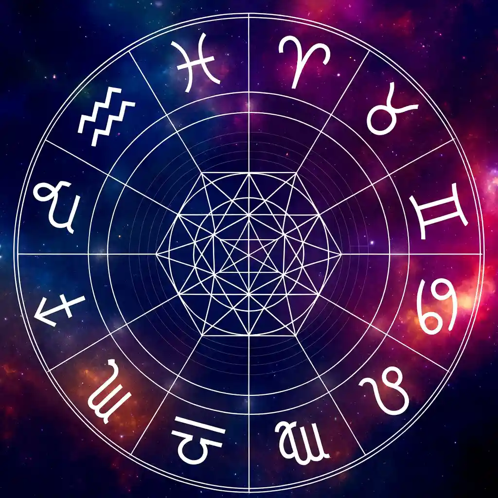
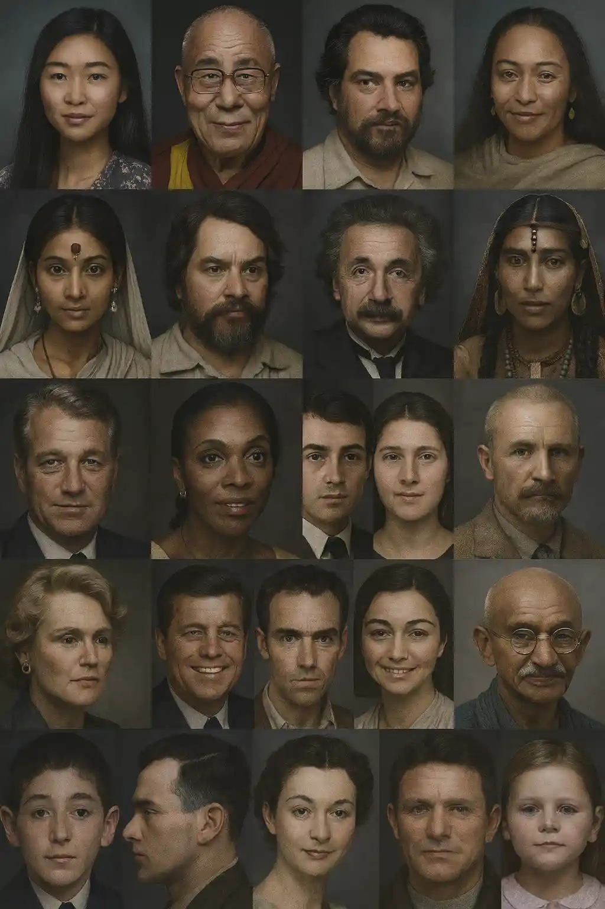

Holistic Astrology

Graphology

Delve into the wisdom of Graphology, Morphopsychology, and Astrology to illuminate the essence of who you are and the direction of your life’s path — embark on a journey of profound self-discovery.
From early fascination with the stars to decoding handwriting and the human face, my path has been one of deep discovery and passion.
Learn more